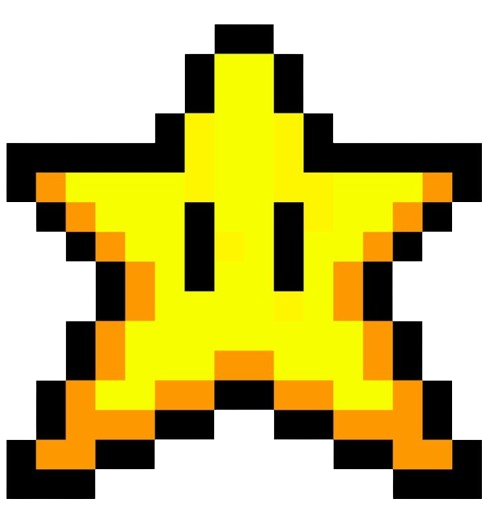
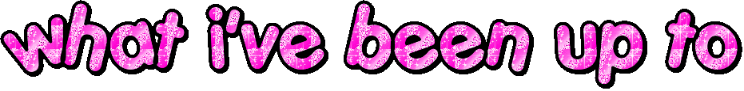
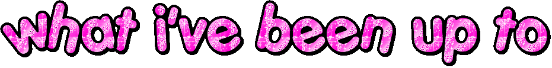
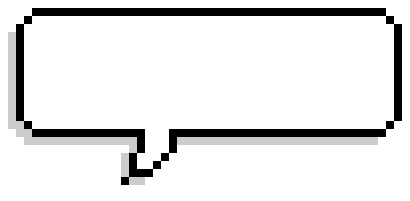

reach for the stars. Best viewed in Netscape Navigator™ where have u been? my mind is going a mile an hour. qwertyuiopasdfghjklzxcvbnm please don't break anything no actually i don't think this purple color is obnoxious
reach for the stars. Best viewed in Netscape Navigator™ where have u been? my mind is going a mile an hour. qwertyuiopasdfghjklzxcvbnm please don't break anything no actually i don't think this purple color is obnoxious



StudySync - HTN '24
- At Hack The North 2024, with school just recently starting, our team felt it best to build a tool to help us in our studies
- We all like to take collaborative notes, so we decided to build StudySync - a platform to enhance our notetaking process
- Built using React.js, StudySync allows you to create study groups for different classes, where you collaborators can publish notes for the group to see
- Users can generate a transcription of a lecture with audio and get a quiz based on the content.
- A super cool feature, made possible by the Symphonics API, is the ability to transcribe a video of the user mouthing their notes. This is perfect for when you're too lazy to type your notes, but also can't make a voice note in the middle of class!
- StudySync was awarded the Best Use of Auth0 award
